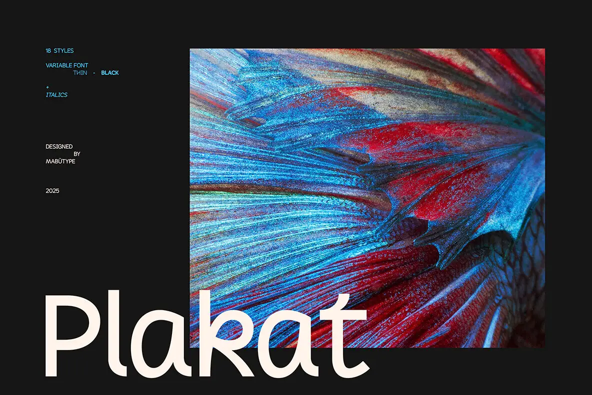

The source texture, small cyan specifications, creator credit, and low-set Plakat wordmark remain separate browser layers; font facts update with the selected file.
The cleaned red and cyan print anchors an edge-set metadata rail and the oversized wordmark. Family counts, variable support, weight range, and italics status follow the selected font.

The source texture, small cyan specifications, creator credit, and low-set Plakat wordmark remain separate browser layers; font facts update with the selected file.